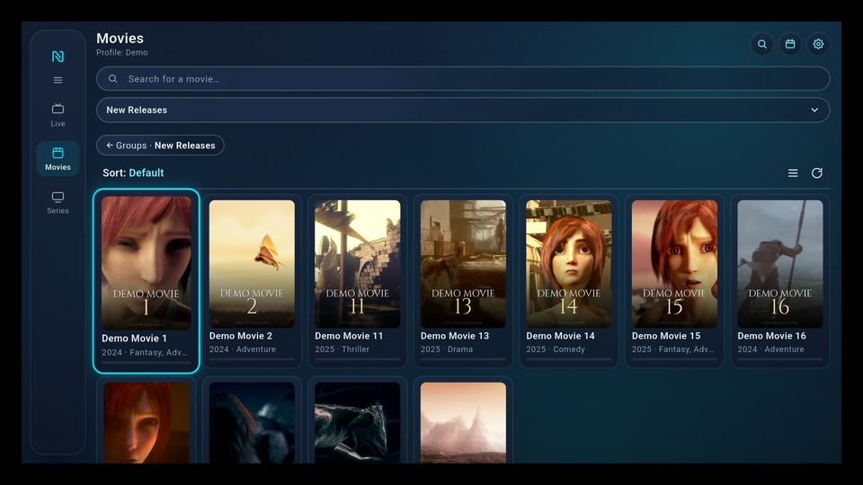
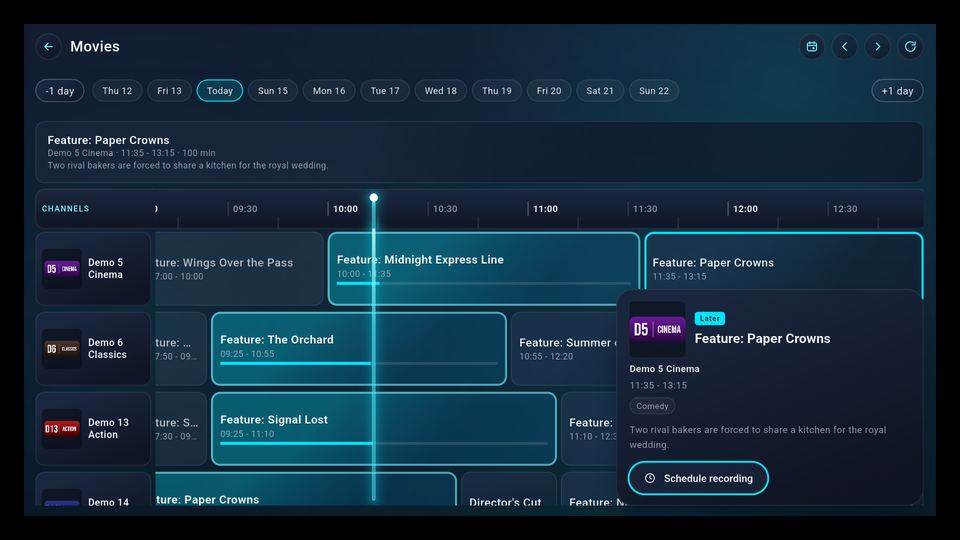

NitaTVTrình phát IPTV cho Android TV, máy tính bảng và điện thoại
NitaTV phát các luồng của nhà cung cấp mà chính bạn đăng ký, hoặc danh sách phát M3U của bạn: truyền hình trực tiếp kèm lịch phát sóng, ghi hình, phim lẻ và phim bộ.
Một tháng dùng thử miễn phí, không cần thẻ tín dụng.

Truyền hình trực tiếp 
Lịch phát sóng 
Phim lẻ và phim bộ 
Trang của một bộ phim 
Âm thanh và phụ đề 
Hẹn giờ ghi hình 
Trên điện thoại


Ảnh chụp màn hình hiển thị một nguồn minh họa: mọi tên, hình ảnh và lịch phát sóng đều là hư cấu.
Video minh họa: “Sintel” © Blender Foundation, CC BY 3.0 (durian.blender.org).
⚠ NitaTV không cung cấp kênh, phim hay bất kỳ nội dung nào, và không bán hay giới thiệu bất kỳ nhà cung cấp nào. Bạn cần có gói đăng ký riêng với một nhà cung cấp, hoặc một danh sách phát.
NitaTV làm được gì
- Đăng nhập bằng đường liên kết danh sách phát M3U hoặc thông tin đăng nhập của nhà cung cấp
- Thêm danh sách phát của bạn từ điện thoại bằng cách quét mã QR
- Truyền hình trực tiếp kèm lịch phát sóng
- Phim lẻ và phim bộ, xem tiếp từ chỗ bạn đã dừng
- Ghi hình chương trình, ngay lập tức hoặc hẹn giờ từ lịch phát sóng
- Tải phim và tập phim xuống để xem ngoại tuyến
- Truyền tới thiết bị Chromecast
- Chọn bản âm thanh và phụ đề
- Nhiều hồ sơ, mục yêu thích và tìm kiếm
- Hình trong hình
- Có sẵn bằng 21 ngôn ngữ
Câu hỏi thường gặp
NitaTV có cung cấp kênh không?
Không. NitaTV là trình phát: ứng dụng phát những gì nhà cung cấp của bạn cung cấp. Ứng dụng không chứa kênh nào và không giới thiệu nhà cung cấp nào.
Tôi cần những gì?
Một đường liên kết danh sách phát M3U, hoặc thông tin đăng nhập mà nhà cung cấp đã gửi cho bạn. Bạn có thể nhập trên TV, hoặc gửi từ điện thoại bằng cách quét mã QR.
Trên những thiết bị nào?
Android TV và Google TV, máy tính bảng và điện thoại Android. Từ điện thoại hoặc máy tính bảng, bạn cũng có thể truyền tới Chromecast.
Giá bao nhiêu?
Một tháng dùng thử miễn phí, không cần thẻ tín dụng, mỗi tài khoản Google một lần. Sau đó là gói đăng ký theo năm, hủy bất cứ lúc nào trên Google Play. Gói này có giá 9,99 USD mỗi năm; giá chính xác theo đơn vị tiền tệ của quốc gia bạn được hiển thị trên Google Play.
Thông tin đăng nhập của tôi được xử lý thế nào?
Thông tin đăng nhập của bạn được lưu trên thiết bị, trong một kho được mã hóa. Khi gửi từ điện thoại bằng mã QR, thông tin được mã hóa đầu cuối: máy chủ của chúng tôi không thể đọc được. NitaTV không có quảng cáo và không có trình theo dõi.